CHAPTER 10 TD법: 시간차 학습
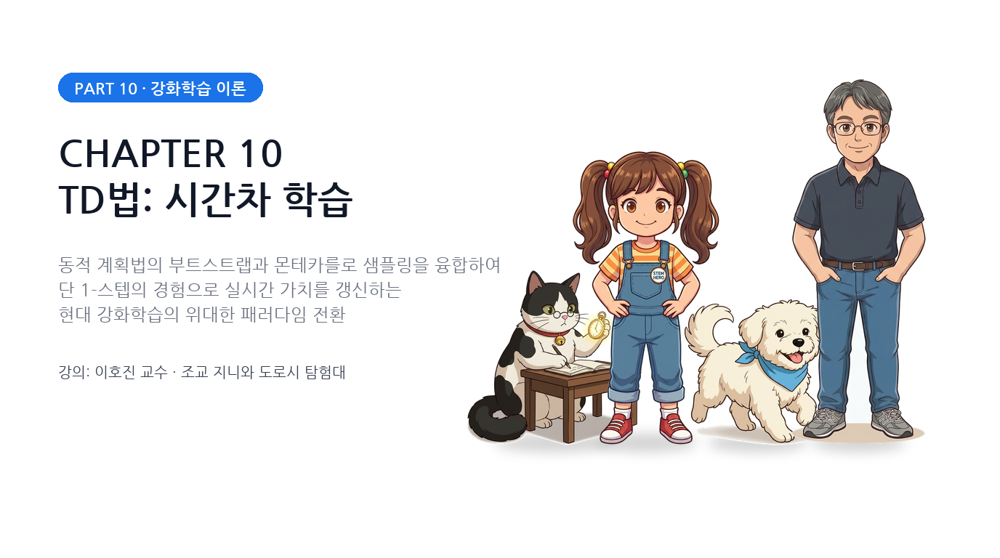
그림 10-Intro-1 동적 계획법(DP)의 부트스트랩과 몬테카를로(MC)의 경험 모델 프리 샘플링을 융합하여 실시간 온라인 학습을 완성하는 제10장 시간차 학습(TD)의 전체 조감도10.0.1 몬테카를로법(MC)의 한계와 실시간 학습의 갈망
9장에서 우리는 환경 모델(전이 확률과 보상 함수)을 전혀 모르는 상태에서도, 에이전트가 직접 부딪치며 겪은 경험 데이터의 표본 평균만으로 가치를 평가하고 최적 정책을 찾아내는 몬테카를로법(Monte Carlo Method)을 배웠습니다.
 그림 10-Intro-2 에피소드 완주 후 최종 결말(반환값 $G_t$)을 확인할 때까지 기다렸다가 비로소 모든 상태의 가치를 역방향으로 갱신하는 몬테카를로법(MC)의 지연 정산 구조
그림 10-Intro-2 에피소드 완주 후 최종 결말(반환값 $G_t$)을 확인할 때까지 기다렸다가 비로소 모든 상태의 가치를 역방향으로 갱신하는 몬테카를로법(MC)의 지연 정산 구조
하지만 몬테카를로법은 실전 응용에서 결코 무시할 수 없는 치명적인 구조적 한계를 안고 있었습니다:
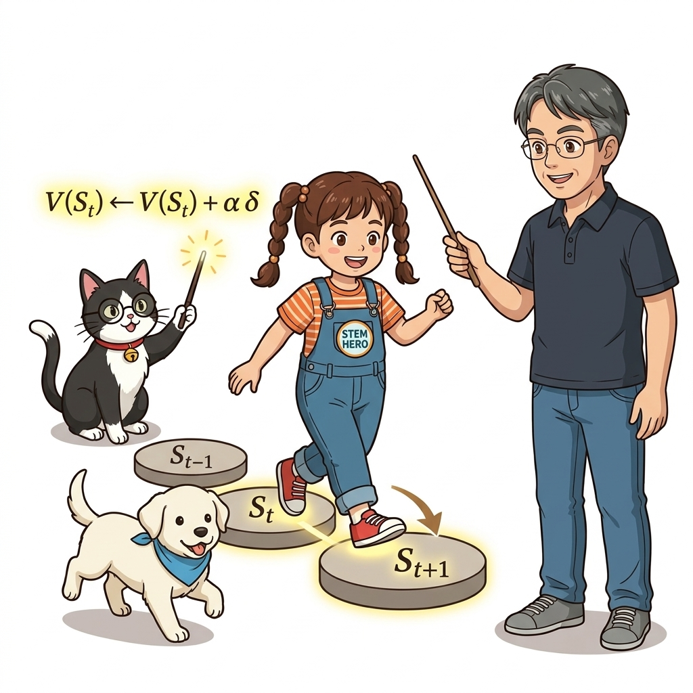
그림 10-Intro-3 단 한 걸음(1-Step)을 앞으로 내딛자마자 마법 지팡이로 이전 발판의 가치를 실시간으로 번개처럼 업데이트해 주는 지니와 도로시몬테카를로법의 3대 결정적 한계
- 지연 정산의 고통 (에피소드 완주 대기):
- 몬테카를로법은 에피소드가 완전히 끝날 때까지 기다려야만 누적 참 수익 $G_t$ 가 확정됩니다.
- 바둑을 둘 때 수백 수를 다 두고 계가를 마칠 때까지 기다려야만 첫 수의 가치를 갱신할 수 있는 것과 같습니다.
그림 10-Intro-4 바둑이나 체스처럼 수백 수에 달하는 긴 수순을 모두 끝마칠 때까지 기다려야만 첫 수의 가치를 평가할 수 있어 에이전트의 메모리와 학습 효율이 정체되는 딜레마
- 영구 지속 과제(Continuing Tasks) 적용 불가능:
- 공장 제어, 서버 트래픽 관리, 자율주행 순찰처럼 종료 지점(Terminal State)이 없이 영구히 돌아가는 시스템에는 몬테카를로법을 원천적으로 적용할 수 없습니다.
그림 10-Intro-5 서버 트래픽 제어 및 자율 순찰처럼 종료 상태가 존재하지 않는 영구 지속 과제(Continuing Tasks)에서 에피소드 완주 대기 없이 1-스텝마다 즉각적으로 가치를 적응시키는 실시간 업데이트 흐름
- 극심한 분산(High Variance)과 느린 학습:
- 경로가 길어질수록 우연한 돌발 상황들이 꼬리에 꼬리를 물고 누적되어, 수익 값의 출렁임(분산)이 극도로 커집니다. 따라서 참 가치에 수렴하기 위해선 수십만 개의 방대한 표본이 필요합니다.
 그림 10-Intro-6 에피소드가 길어질수록 환경의 확률적 요동이 꼬리에 꼬리를 물고 누적되어 반환값의 분산이 눈덩이처럼 폭발하는 몬테카를로법의 통계적 부담
그림 10-Intro-6 에피소드가 길어질수록 환경의 확률적 요동이 꼬리에 꼬리를 물고 누적되어 반환값의 분산이 눈덩이처럼 폭발하는 몬테카를로법의 통계적 부담
10.0.2 위대한 하이브리드: DP의 부트스트랩 + MC의 모델 프리
이 타협할 수 없는 난제를 해결하기 위해 인류가 고안해 낸 가장 우아한 해법이 바로 시간차 학습(TD법, Temporal Difference Learning)입니다.
 그림 10-Intro-7 환경 모델 없이 거친 필드를 직접 탐험하는 MC의 경험주의와, 한 스텝 앞의 추정치로 현재를 갱신하는 DP의 부트스트랩을 우아하게 결합한 시간차 학습(TD)의 탄생
그림 10-Intro-7 환경 모델 없이 거친 필드를 직접 탐험하는 MC의 경험주의와, 한 스텝 앞의 추정치로 현재를 갱신하는 DP의 부트스트랩을 우아하게 결합한 시간차 학습(TD)의 탄생
TD법은 강화학습의 양대 산맥인 동적 프로그래밍(DP)과 몬테카를로법(MC)의 장점만을 뽑아내어 하나로 결합한 위대한 하이브리드 알고리즘입니다:
- MC의 장점 계승: 환경의 전이 확률 행렬 $p(s’ \mid s, a)$ 을 몰라도, 실제 경험한 1-스텝 샘플 데이터만으로 학습하는 모델 프리(Model-Free) 속성을 유지합니다.
- DP의 장점 계승: 에피소드 완주를 기다리지 않고, ‘다음 상태의 추정 가치’를 즉시 빌려와서 현재 상태를 실시간 갱신하는 부트스트랩(Bootstrapping) 원리를 차용합니다.
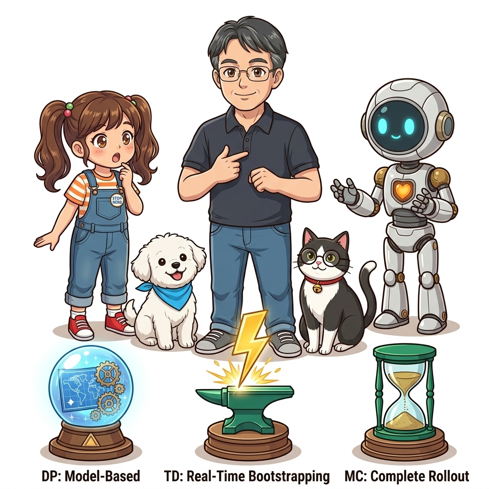
그림 10-Intro-8 모델 기반 온실 속 계획(DP)의 황금 열쇠와 실제 경험 기반(MC)의 나침반이 하나로 융합하여 탄생한 시간차 학습(TD)의 삼위일체 아키텍처10.0.3 ‘시간차(Temporal Difference)’라는 이름의 물리적 의미
왜 이 알고리즘의 이름은 ‘시간차(Temporal Difference)’일까요?
운전자가 안개 낀 도로를 달리고 있다고 상상해 봅시다.
- 10분 뒤에 목적지에 도착할 것이라 예상하고 있었는데($V(S_t)$),
- 단 1초(1스텝)를 더 달려보니 길이 뻥 뚫려 있어서 이제는 8분 뒤면 도착할 것 같습니다($R_t + \gamma V(S_{t+1})$).
- 그렇다면 방금 지나간 단 1초의 시간 차이(Temporal Difference) 동안 나의 예측이 2분이나 어긋났음을 깨닫게 됩니다!
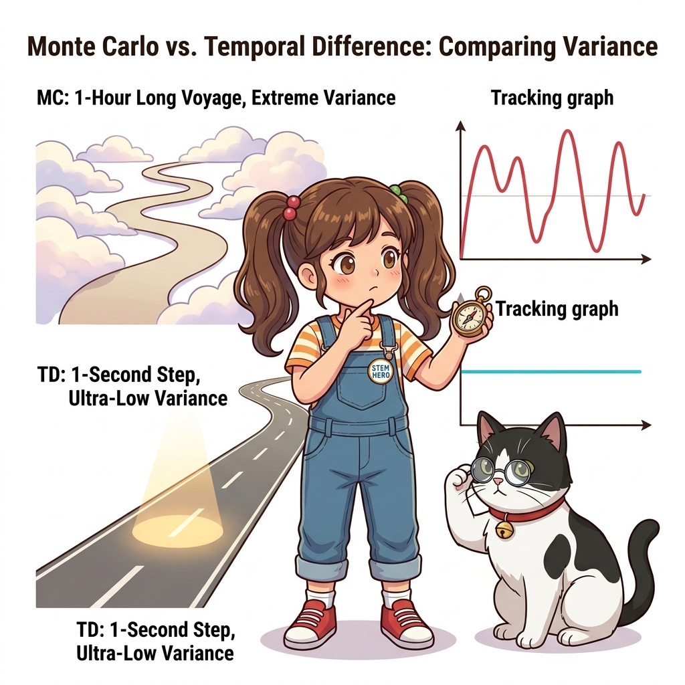
그림 10-Intro-9 안개 낀 도로를 달리다 단 1초(1스텝) 만에 시야가 트였을 때 도착 예상 시간의 차이를 실시간으로 체감하고 운전 계획을 보정하는 시간차(TD) 예측 오차의 일상적 직관이처럼 “연속된 두 시간 스텝 사이의 예측 차이(TD 오차, $\delta_t$)”를 측정하고, 그 오차만큼만 현재 가치를 실시간으로 살짝 보정해 나가는 것이 바로 시간차 학습의 본질입니다.
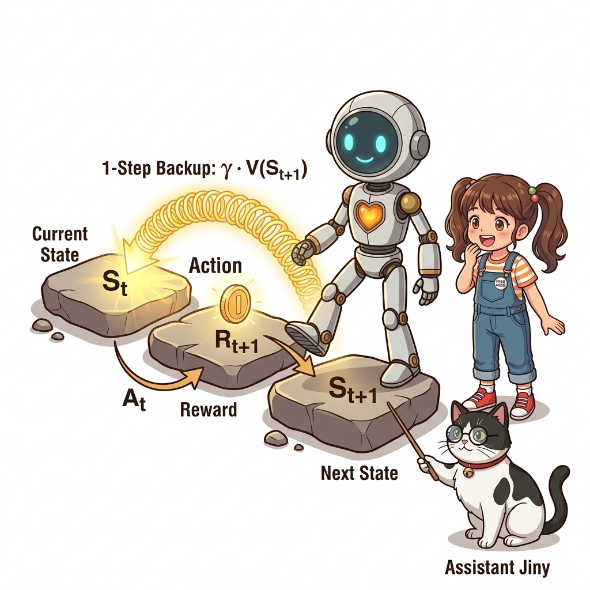
그림 10-Intro-10 에피소드 끝까지 갈 필요 없이, 단 1걸음 이동 즉시 관측된 보상 $R_t$ 와 다음 가치 $\gamma V(S_{t+1})$ 의 사슬을 이용해 현재 가치 $V(S_t)$ 를 실시간 갱신하는 1-스텝 백업 메커니즘10.0.4 편향과 분산의 트레이드오프: 왜 TD가 현실에서 압도적으로 빠른가?
수학적으로 완벽한 참 수익을 사용하는 몬테카를로법(MC) 대신, 아직 정확하지도 않은 다음 상태의 추정 가치를 빌려 쓰는 TD법이 과연 안전할까요?
 그림 10-Intro-11 다음 상태의 추정 가치 $V(S_{t+1})$ 를 당겨와 현재 예측치 $V(S_t)$ 와의 오차인 $\delta_t$ 를 계산하고 학습률 $\alpha$ 만큼 살짝 보정하는 TD(0)의 간결한 수학적 심장
그림 10-Intro-11 다음 상태의 추정 가치 $V(S_{t+1})$ 를 당겨와 현재 예측치 $V(S_t)$ 와의 오차인 $\delta_t$ 를 계산하고 학습률 $\alpha$ 만큼 살짝 보정하는 TD(0)의 간결한 수학적 심장
놀랍게도 대부분의 실세계 강화학습 문제에서 TD법은 몬테카를로법보다 압도적으로 빠르게 참 가치에 수렴합니다:
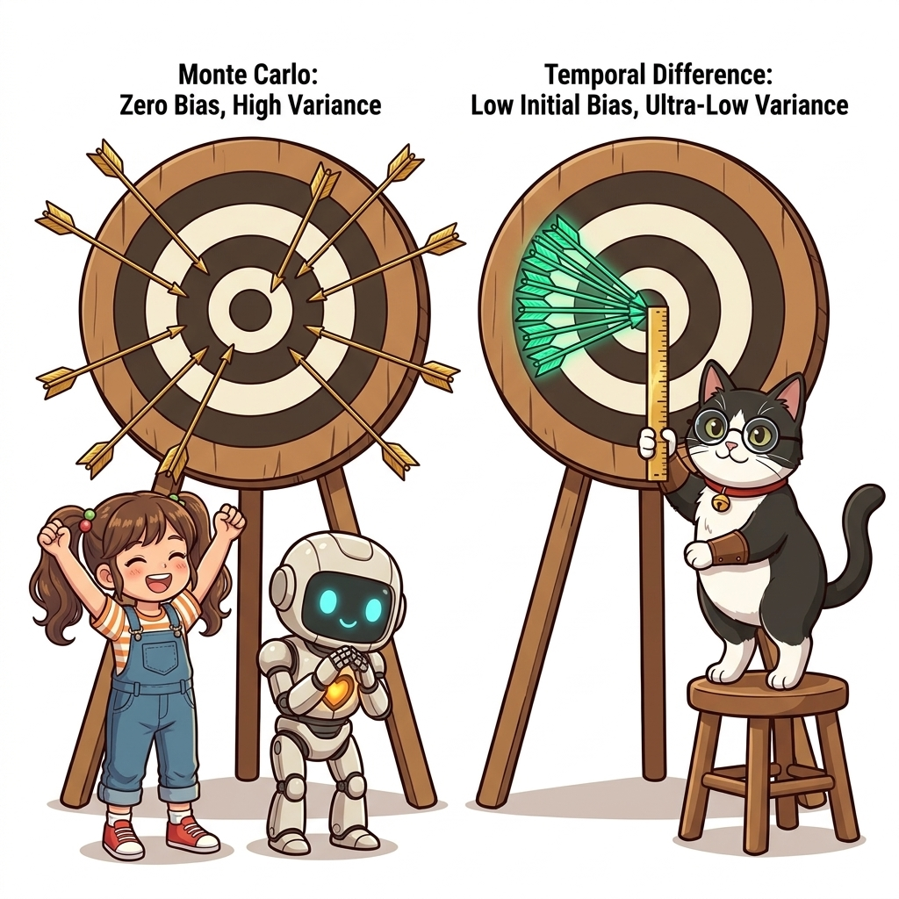
그림 10-Intro-12 편향과 분산의 양궁 과녁 대조: 참값을 중심으로 넓게 흩뿌려지는 MC(고분산 무편향) vs 조준점이 살짝 빗나가 있어도 화살들이 좁쌀처럼 한곳에 조밀하게 꽂히는 TD(초저분산 약간의 초기편향)- 몬테카를로법 (MC): 100% 진짜 보상들의 합이므로 편향은 0(Unbiased)이지만, 수백 번의 우연이 누적되어 분산이 너무 커서 수렴에 엄청난 시간이 걸립니다.
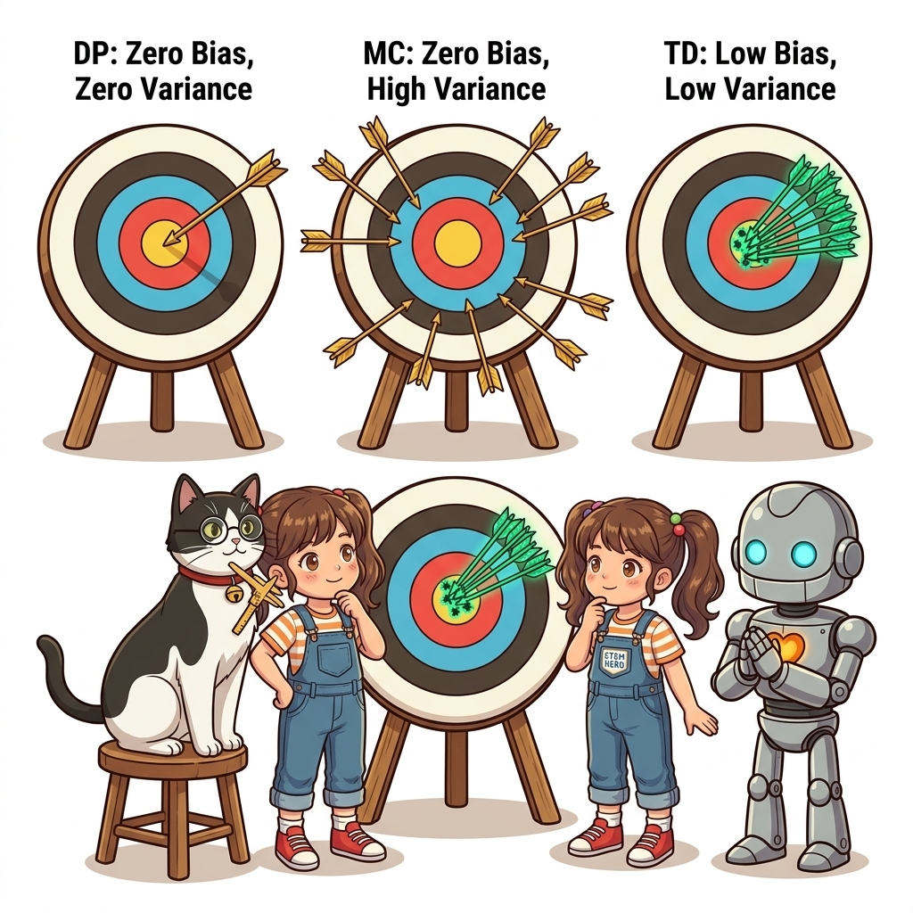
그림 10-Intro-13 참값을 중심으로 넓게 흩뿌려져 엄청난 수의 에피소드가 쌓여야만 평균이 수렴하는 몬테카를로법(MC)의 고분산 무편향 양궁 과녁- 시간차 학습 (TD): 학습 초기에는 추정치를 빌려 쓰므로 약간의 편향(Bias)이 존재하지만, 단 1스텝 앞만 바라보므로 분산이 극단적으로 작아 안정적이고 빠르게 수렴합니다. 학습이 진행될수록 추정치 자체가 참값에 가까워지므로 편향 역시 0으로 사르르 소멸합니다!
 그림 10-Intro-14 1-스텝 전개만으로 분산을 극단적으로 통제하여 조밀한 탄착군을 형성하고, 학습이 진행될수록 편향마저 0으로 소멸시키는 시간차 학습(TD)의 수렴 안정성
그림 10-Intro-14 1-스텝 전개만으로 분산을 극단적으로 통제하여 조밀한 탄착군을 형성하고, 학습이 진행될수록 편향마저 0으로 소멸시키는 시간차 학습(TD)의 수렴 안정성
10.0.5 제어로의 도약: SARSA vs Q-러닝의 흥미진진한 철학 대결
10장에서는 단순히 정책의 점수를 매기는 가치 평가(Evaluation)를 넘어, 컴퓨터가 스스로 최적의 길을 찾아내는 정책 제어(Control)를 완성합니다.
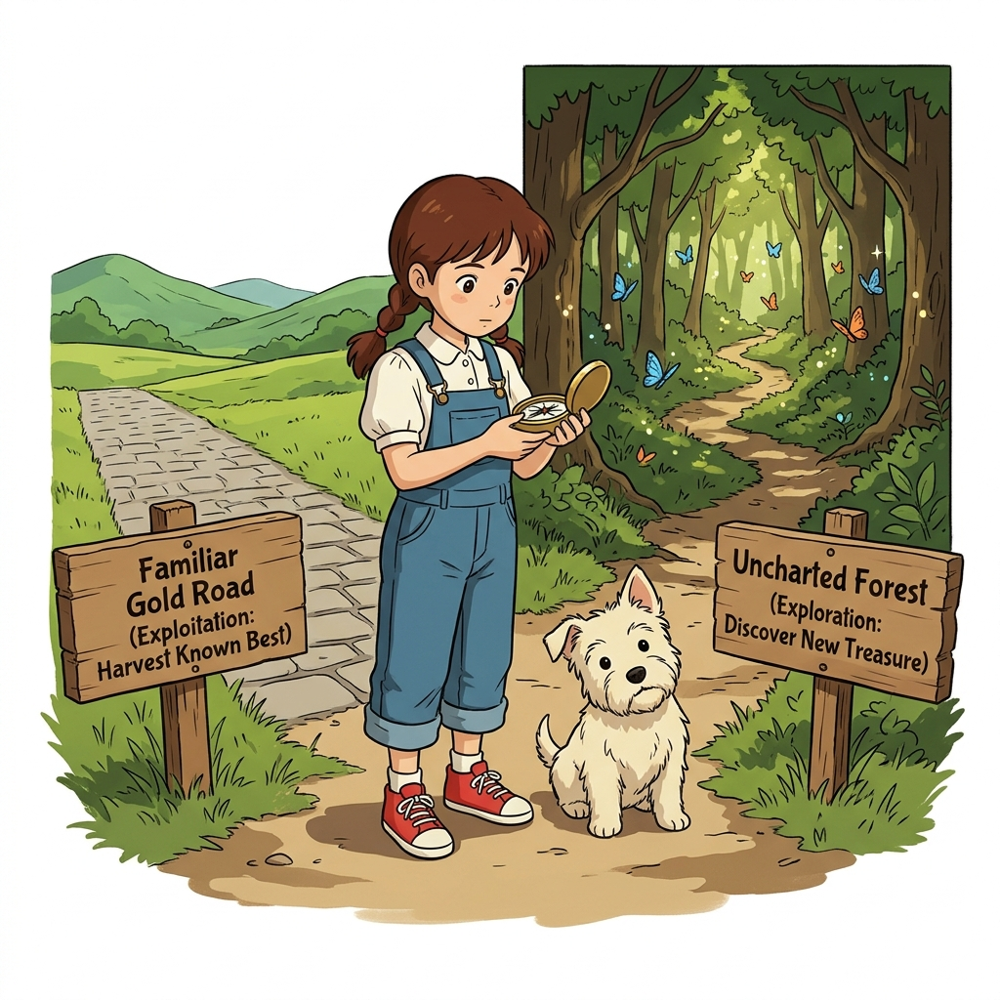
그림 10-Intro-15 상태 가치 $V(s)$ 에 갇힌 수동적 관찰자에서, 행동 가치 $Q(s, a)$ 를 무기 삼아 미지의 갈림길에서 최적의 결단을 내리는 능동적 제어 에이전트로의 극적인 도약환경 모델이 없는 상태에서 제어를 수행하기 위해 주인공으로 등극하는 것이 바로 행동 가치 함수 $Q(s, a)$이며, 이를 바탕으로 두 가지 전설적인 알고리즘이 탄생합니다:
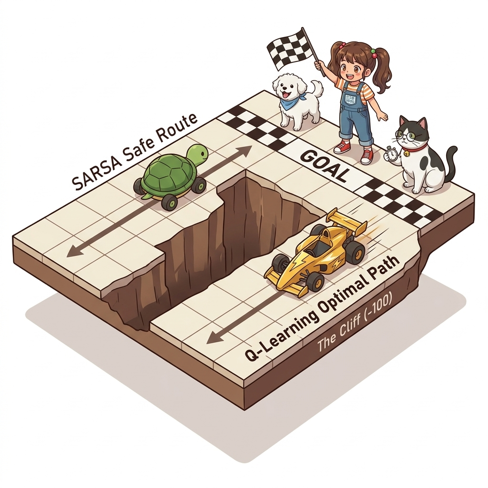
그림 10-Intro-16 절벽 트랙에서의 철학적 대결: 자신의 10% 탐색 실수를 두려워해 안전하게 멀리 우회하는 온-정책 SARSA(배경) vs 이상적인 최적 경로를 믿고 위험 바로 옆 최단 지름길을 거침없이 질주하는 오프-정책 Q-러닝(전경)- 온-정책 시간차 제어: SARSA (10.2절)
- 행동하는 정책과 학습하는 정책이 완전히 동일한 하나의 정책입니다.
- 자신이 탐색 중에 10%의 확률로 발을 헛디딜 수 있다는 사실을 가치에 솔직히 반영하여, 절벽을 멀리 우회하는 보수적인 안전제일주의 경로를 학습합니다.
그림 10-Intro-17 자신의 탐색 실수 가능성을 겸허히 인정하고, 벼랑 끝의 위험을 피해 안전한 우회로를 따라 신중하게 발걸음을 옮기는 온-정책 SARSA의 지혜
- 오프-정책 시간차 제어: Q-러닝 (10.4절)
- 필드 탐험은 무작위 탐험 정책으로 진행하면서도, 가치 학습은 오직 이론상 최고의 행동($\max_a Q$)만을 목표로 삼습니다.
- 중요도 샘플링 비율 $\rho$ 를 완전히 소거해 버리고, 절벽 바로 옆을 스쳐 지나가는 가장 빠른 최단 지름길을 당당하게 개척합니다.
 그림 10-Intro-18 다음 상태에서 가능한 가장 완벽한 최댓값 $\max_a Q$ 만을 바라보며 절벽 바로 옆 최단 지름길을 두려움 없이 질주하는 오프-정책 Q-러닝의 패기
그림 10-Intro-18 다음 상태에서 가능한 가장 완벽한 최댓값 $\max_a Q$ 만을 바라보며 절벽 바로 옆 최단 지름길을 두려움 없이 질주하는 오프-정책 Q-러닝의 패기
10.0.6 에이전트의 초경량화와 딥러닝(DQN)으로의 관문
10장의 종착지인 10.5절에서는 메모리를 낭비하는 무거운 정책 딕셔너리(self.pi, self.b)를 완전히 깎아내는 소프트웨어 다이어트를 단행합니다.
 그림 10-Intro-19 메모리를 무겁게 짓누르던 정책 확률 딕셔너리 장부들을 모조리 깎아내고, 단 하나의 Q-테이블과 $\epsilon$-주사위만으로 날렵해진 에이전트의 헬스장 다이어트
그림 10-Intro-19 메모리를 무겁게 짓누르던 정책 확률 딕셔너리 장부들을 모조리 깎아내고, 단 하나의 Q-테이블과 $\epsilon$-주사위만으로 날렵해진 에이전트의 헬스장 다이어트
오직 self.Q 테이블 하나와 동전 튕기기(rand() < ε), 그리고 np.argmax()만으로 동작하는 초경량 샘플 모델(Sample Model)을 완성합니다.
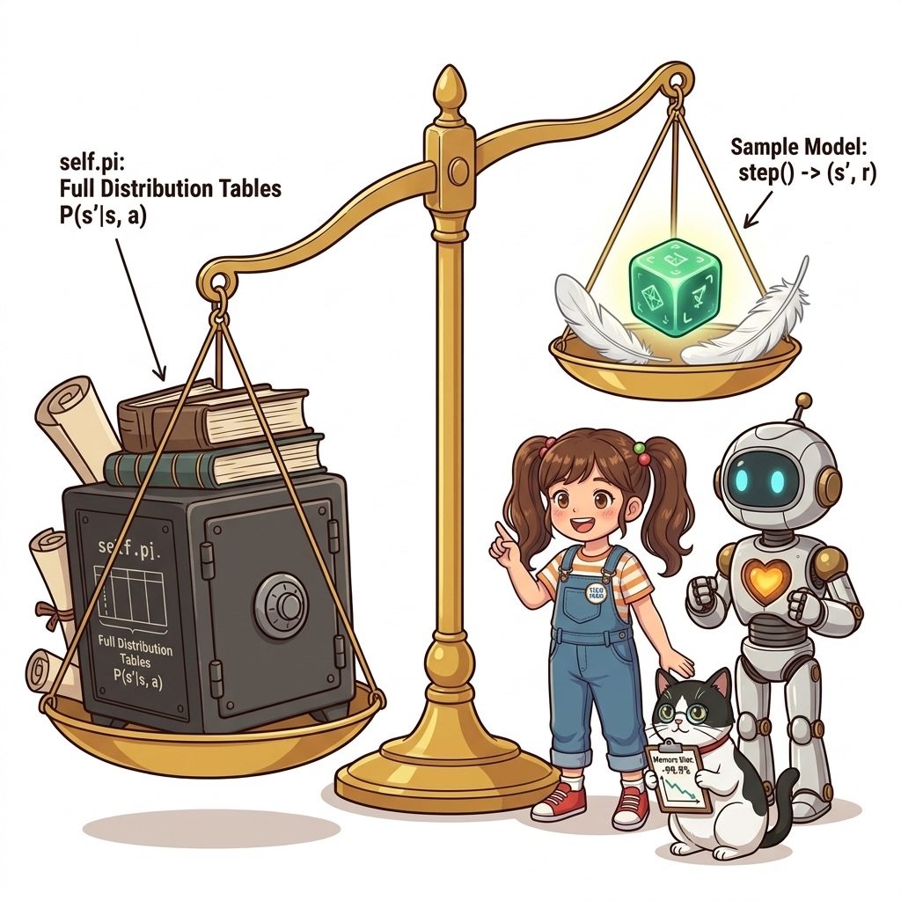
그림 10-Intro-20 수많은 상태별 딕셔너리 장부를 벗어던지고, 동전 튕기기와 최댓값 연산만으로 깃털처럼 가볍게 동작하는 초경량 샘플 모델의 완성이 초경량 샘플 모델 구조는 단순한 코드 정리가 아닙니다.
테이블의 크기가 무한대로 폭발하는 자율주행과 비디오게임의 연속 세계를 해결하기 위해, 훗날 딥마인드가 아타리 게임을 정복할 때 사용한 DQN(Deep Q-Network)과 인공신경망 모듈이 완벽하게 도킹되는 절대적인 토대가 됩니다!
 그림 10-Intro-21 딕셔너리를 비워낸 자리에 인공신경망의 거대한 모듈을 매끄럽게 결합하여 아타리 게임과 비디오 게임의 연속 세계를 정복하는 딥 Q-네트워크(DQN) 도킹 스테이션
그림 10-Intro-21 딕셔너리를 비워낸 자리에 인공신경망의 거대한 모듈을 매끄럽게 결합하여 아타리 게임과 비디오 게임의 연속 세계를 정복하는 딥 Q-네트워크(DQN) 도킹 스테이션
10.0.7 제10장 6대 소단원 종합 파이프라인
제10장은 기초적인 1-스텝 가치 평가부터 현대 딥 강화학습의 뿌리가 되는 Q-러닝과 초경량화까지, 다음과 같은 아름다운 6단계 계단식 파이프라인으로 구성되어 있습니다:
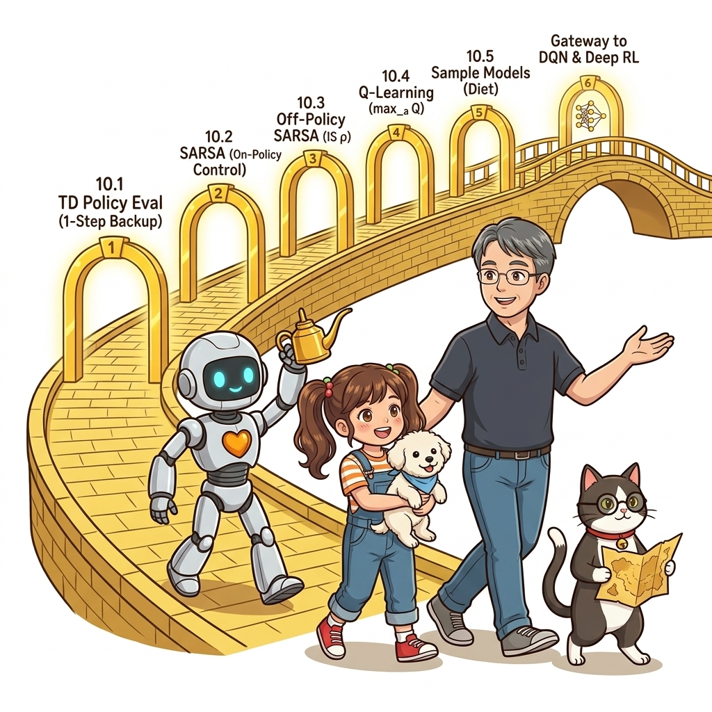
그림 10-Intro-22 제10장 시간차 학습(TD)의 이론적 진화와 소단원별 유기적 연결을 보여주는 종합 로드맵| 소단원 | 핵심 주제 | 주요 학습 내용 및 패러다임 |
|---|---|---|
| 10.1 | TD법으로 정책 평가하기 | DP 부트스트랩 + MC 샘플링 융합, TD(0) 점화식 유도, 편향과 분산 분석 |
| 10.2 | SARSA: 온-정책 시간차 제어 | 행동 가치 $Q(s, a)$ 도입, 5단계 체인 S-A-R-S-A, $\epsilon$-탐욕 정책, 보수적 안전 운전 |
| 10.3 | 오프-정책 SARSA | 행동 정책 $b$ 와 목표 정책 $\pi$ 의 분리, 1-스텝 중요도 가중치 $\rho$, $\rho=0$ 한계 규명 |
| 10.4 | Q-러닝: 오프-정책 제어의 제왕 | 벨만 최적 방정식 샘플링, $\max$ 타깃을 통한 $\rho$ 완전 소거, 최단 지름길 돌파 |
| 10.5 | 분포 모델과 샘플 모델 | 환경/에이전트 모델 구분, 딕셔너리 완전 제거 다이어트, 연속 공간 및 DQN 관문 |
| 10.6 | 제10장 종합 정리 | DP vs MC vs TD 총결산 비교표, 11장 심층 신경망 시대로의 역사적 출항 |
10.0.8 👨🏫 이호진 교수님의 직강 총론
👨🏫 이호진 교수님의 직강 노트:
“강화학습을 공부할 때 가장 가슴 뛰는 순간을 꼽으라면, 단연코 제10장 시간차 학습(TD)을 마주하는 순간입니다.
지도가 없는 막막한 세상에서 하염없이 결말을 기다리던 몬테카를로법의 방황을 끝내고, 발을 내딛는 그 찰나의 순간(1-Step)에 번개처럼 깨달음을 얻는 TD의 직관은 컴퓨터 과학 역사상 가장 매혹적인 지적 도약입니다.
이 1-스텝의 깨달음이 행동 가치 $Q$ 와 만나 SARSA가 되고, 벨만 최적 방정식의 황금 왕관($\max$)을 쓰며 Q-러닝이라는 불멸의 제왕으로 탄생하는 웅장한 드라마를 저와 함께 즐겨보시길 바랍니다!”
그림 10-Intro-23 시간차 학습이 컴퓨터 과학과 강화학습 역사에 던진 지적 혁명과, SARSA 및 Q-러닝으로 이어지는 웅장한 여정을 열정적으로 설파하시는 이호진 교수님
🐱 조교 지니의 응원 노트:
“도로시와 여러분, 신발 끈 단단히 묶으셨나요? 한 걸음 걸을 때마다 발밑의 가치가 번쩍번쩍 업그레이드되는 10장의 롤러코스터에 탑승하신 것을 환영합니다냥!
이제 더 이상 무거운 배낭을 질 필요도, 끝까지 기다릴 필요도 없어요. 매 순간 깨어있는 지능으로 최적의 길을 찾아 나서는 시간차 학습의 마법 속으로 지금 바로 출발해 봅시다냥!”
 그림 10-Intro-24 1-스텝 실시간 업데이트라는 마법을 장착하고 도로시와 토토, 티니와 함께 제10장의 짜릿한 롤러코스터에 신나게 올라타며 축하하는 마법 요정 지니
그림 10-Intro-24 1-스텝 실시간 업데이트라는 마법을 장착하고 도로시와 토토, 티니와 함께 제10장의 짜릿한 롤러코스터에 신나게 올라타며 축하하는 마법 요정 지니